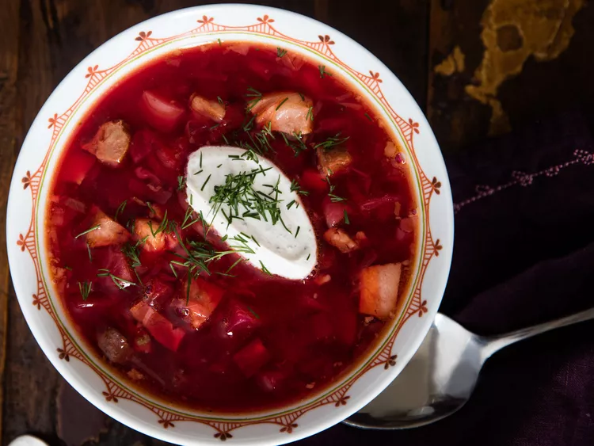

Borscht
Borscht is a sour soup that is traditionally made with meat stock and boiled vegetables.
The Ukrainian version, which features beets, is perhaps the most
well known type — but varieties of borscht can be found throughout Central and
Eastern Europe and Northern Asia.
Ingredients:
Sausage: This Ukrainian borscht recipe starts with a pound of pork sausage.
Vegetables: You'll need beets, carrots, baking potatoes, cabbage, and an onion.
Canned tomatoes: Use drained diced tomatoes and canned tomato paste.
Vegetable oil: Cook the onion in oil.
Water: You'll need almost nine cups of water for this big-batch soup.
Garlic: Three cloves of garlic add bold flavor.
Sugar: A teaspoon of white sugar lends subtle sweetness.
Seasonings: Season the borscht with salt and pepper to taste.
Sour cream: Top the borscht with sour cream.
Fresh herbs: Garnish the soup with fresh parsley or dill.
Instructions:
Cook the sausage and set aside.
Boil water, add the sausage, then add the vegetables and diced tomatoes.
Cook the onion, stir in the tomato paste, and thin with water. Transfer to the pot.
Add the garlic, cover, and turn off the heat. Stir in the sugar and seasonings.
Ladle into bowls and garnish with sour cream and fresh herbs.